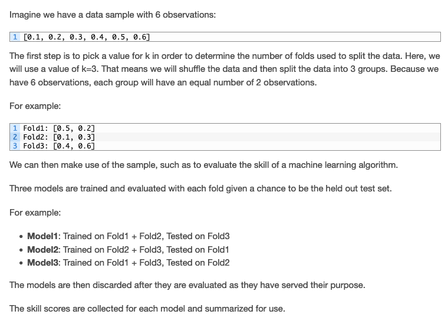

Validation#
Once our model is built and trained, validation is the next phase (we called it testing in the examples).
K-Fold Cross Validation#
Cross-validation is a statistical method used to estimate the skill of machine learning models. It is commonly used in applied machine learning to compare and select a model for a given predictive modeling problem because it is easy to understand, easy to implement, and results in skill estimates that generally have a lower bias than other methods.
Cross-validation is a resampling procedure used to evaluate machine learning models on a limited data sample.
The procedure has a single parameter called k that refers to the number of groups that a given data sample is to be split into. As such, the procedure is often called k-fold cross-validation. When a specific value for k is chosen, it may be used in place of k in the reference to the model, such as k=10 becoming 10-fold cross-validation.
Cross-validation is primarily used in applied machine learning to estimate the skill of a machine learning model on unseen data. That is, to use a limited sample in order to estimate how the model is expected to perform in general when used to make predictions on data that were not used during the training of the model.
It is a popular method because it is simple to understand and because it generally results in a less biased or less optimistic estimate of the model skill than other methods, such as a simple train/test split.
The general procedure is as follows:
Shuffle the dataset randomly.
Split the dataset into k groups
For each unique group: - Take the group as a hold out or test data set - Take the remaining groups as a training data set - Fit a model on the training set and evaluate it on the test set - Retain the evaluation score and discard the model
Summarize the skill of the model using the sample of model evaluation scores
Importantly, each observation in the data sample is assigned to an individual group and stays in that group for the duration of the procedure. This means that each sample is given the opportunity to be used in the hold out set 1 time and used to train the model k-1 times.
Each of these hold outs is called a fold, hence the name of the method
Quote
“This approach involves randomly dividing the set of observations into k groups, or folds, of approximately equal size. The first fold is treated as a validation set, and the method is fit on the remaining k − 1 folds.”
pp. 181 An Introduction to Statistical Learning: with Applications in R (2021)
It is also important that any preparation of the data prior to fitting the model occur on the CV-assigned training dataset within the loop rather than on the broader data set. This requirement also applies to any tuning of hyperparameters. A failure to perform these operations within the loop may result in data leakage and an optimistic estimate of the model skill.
Quote
“Despite the best efforts of statistical methodologists, users frequently invalidate their results by inadvertently peeking at the test data.”
The results of a k-fold cross-validation run are often summarized with the mean of the model skill scores. It is also good practice to include a measure of the variance of the skill scores, such as the standard deviation or standard error.
Configuration of k#
The k value must be chosen carefully for your data sample.
A poorly chosen value for k may result in a misrepresentative idea of the skill of the model, such as a score with a high variance (that may change a lot based on the data used to fit the model), or a high bias, (such as an overestimate of the skill of the model).
Three common tactics for choosing a value for k are as follows:
Representative: The value for k is chosen such that each train/test group of data samples is large enough to be statistically representative of the broader dataset.
k=5; or 10: The value for k is fixed to 5 or 10, a value that has been found through experimentation to generally result in a model skill estimate with low bias a modest variance.
k=n: The value for k is fixed to n, where n is the size of the dataset to give each test sample an opportunity to be used in the hold out dataset. This approach is called leave-one-out cross-validation.
Quote
“The choice of k is usually 5 or 10, but there is no formal rule. As k gets larger, the difference in size between the training set and the resampling subsets gets smaller. As this difference decreases, the bias of the technique becomes smaller”
Values of k=5 or 10 are very common in the field of applied machine learning, and are recommended if you are struggling to choose a value for your dataset.
Quote
“To summarize, there is a bias-variance trade-off associated with the choice of k in k-fold cross-validation. Typically, given these considerations, one performs k-fold cross-validation using k = 5 or k = 10, as these values have been shown empirically to yield test error rate estimates that suffer neither from excessively high bias nor from very high variance.”
— Page 184, An Introduction to Statistical Learning, 2013
If a value for k is chosen that does not evenly split the data sample, then one group will contain a remainder of the examples. It is preferable to split the data sample into k groups with the same number of samples, such that the sample of model skill scores are all equivalent.
Note
Here is an example to illustrate the “folding” steps

For more on how to configure k-fold cross-validation, see the tutorial:how-to-configure-k-fold-cross-validation